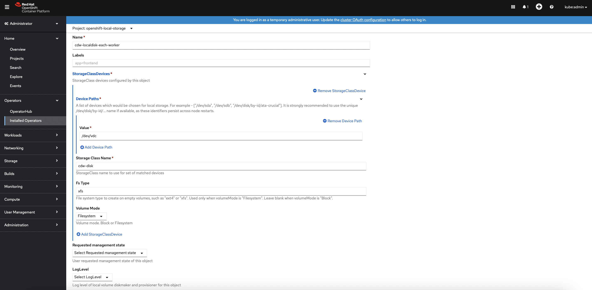

CDW Disk in Openshift
This article describes the steps to deploy and scale the direct attached disk(s) in each Openshift worker node for CDW by using the Local Storage Operator in Openshift platform.
Please note that the sizing of the direct attached disk for CDW illustrated in this demo does not match the production requirements. For production requirements, please refer to this link.
Deploy CDW Disk in Openshift
-
Install the
Local Storage Operatorbased on the published procedure in this link. -
In Openshift dashboard, navigate to
Operators>Installed Operators>Local Storage Operator>All Instances. ClickCreate New>Local Volume.
-
Enter the fields based on the identical device path of the direct attached disk for each Openshift worker node. In this demo, the device path is
/dev/vdc.

-
Successful implementation will produce the following local persistent volumes automatically. In this demo, each Openshift worker node has a single 400Gi direct attached SSD.
[root@ocpbastion ~]# oc get pv | head -1; oc get pv | grep local NAME CAPACITY ACCESS MODES RECLAIM POLICY STATUS CLAIM STORAGECLASS REASON AGE local-pv-12e7ab5 400Gi RWO Delete Available cdw-disk 2m33s local-pv-17bf8fbc 300Gi RWO Delete Bound openshift-storage/ocs-deviceset-vdb-0-data-2slfmj vdb 24h local-pv-33a6a00a 400Gi RWO Delete Available cdw-disk 2m34s local-pv-62cdcca 300Gi RWO Delete Bound openshift-storage/ocs-deviceset-vdb-0-data-06dblw vdb 24h local-pv-abb1e063 400Gi RWO Delete Available cdw-disk 2m34s local-pv-aca516bf 300Gi RWO Delete Bound openshift-storage/ocs-deviceset-vdb-0-data-1t74g8 vdb 24h -
Successful implememtation also creates a new storageClass
cdw-diskready to be consumed by CDW.[root@ocpbastion ~]# oc get sc | head -1; oc get sc | grep cdw NAME PROVISIONER RECLAIMPOLICY VOLUMEBINDINGMODE ALLOWVOLUMEEXPANSION AGE cdw-disk kubernetes.io/no-provisioner Delete WaitForFirstConsumer false 2m9s
Scale CDW Disk in Openshift
-
A new 200Gi disk has been added in each Openshift worker node and the device path is
/dev/vdd. -
In Openshift dashboard, navigate to
Operators>Installed Operators>Local Storage Operator>All Instances>cdw-localdisk-each-worker>YAML. Edit the YAML file by adding- /dev/vddunder thedevicePathscategory. ClickSavebutton.
-
Successful implementation will produce the new local persistent volumes with 200Gi SSD automatically.
[root@ocpbastion ~]# oc get pv | head -1; oc get pv | grep local NAME CAPACITY ACCESS MODES RECLAIM POLICY STATUS CLAIM STORAGECLASS REASON AGE local-pv-12e7ab5 400Gi RWO Delete Available cdw-disk 5m59s local-pv-17bf8fbc 300Gi RWO Delete Bound openshift-storage/ocs-deviceset-vdb-0-data-2slfmj vdb 25h local-pv-33a6a00a 400Gi RWO Delete Available cdw-disk 6m40s local-pv-62cdcca 300Gi RWO Delete Bound openshift-storage/ocs-deviceset-vdb-0-data-06dblw vdb 25h local-pv-abb1e063 400Gi RWO Delete Available cdw-disk 6m10s local-pv-aca516bf 300Gi RWO Delete Bound openshift-storage/ocs-deviceset-vdb-0-data-1t74g8 vdb 25h local-pv-c8fe6eea 200Gi RWO Delete Available cdw-disk 85s local-pv-d30bd8ac 200Gi RWO Delete Available cdw-disk 77s local-pv-dc533915 200Gi RWO Delete Available cdw-disk 66s